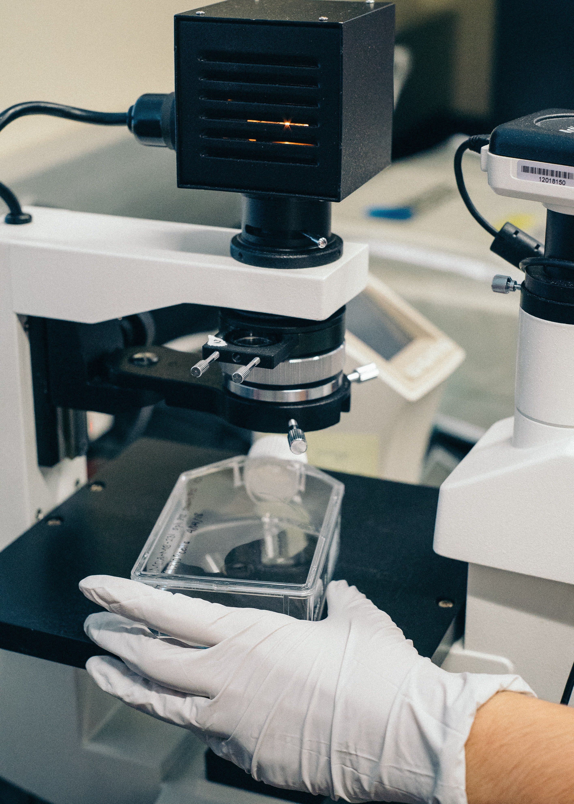

Hypertext Markup Language (HTML) is the standard markup language for creating web pagesI want to share Chemical Pathology on this website. When one is studying any pathology, we need to understand the physiology first.
What applies to chemical pathology then.